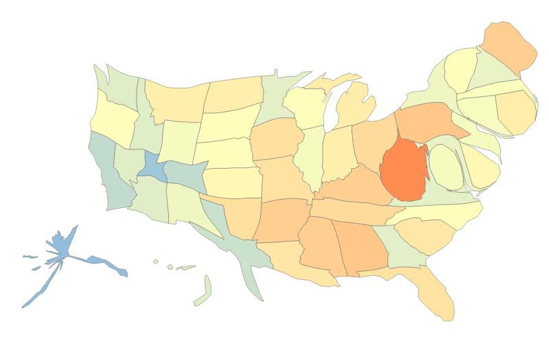

Obesidad en el mundo en 2002, 2005 y 2010

Sobre el proyecto
Basado en los datos de Guardian y utilizando d3.js y cartogram.js
cartogram.js es una implementación de un algoritmo para construir cartogramas continuos, por James A. Dougenik, Nicholas R. Chrisman and Duane R. Niemeyer, ©1985 por laAssociation of American Geographers.